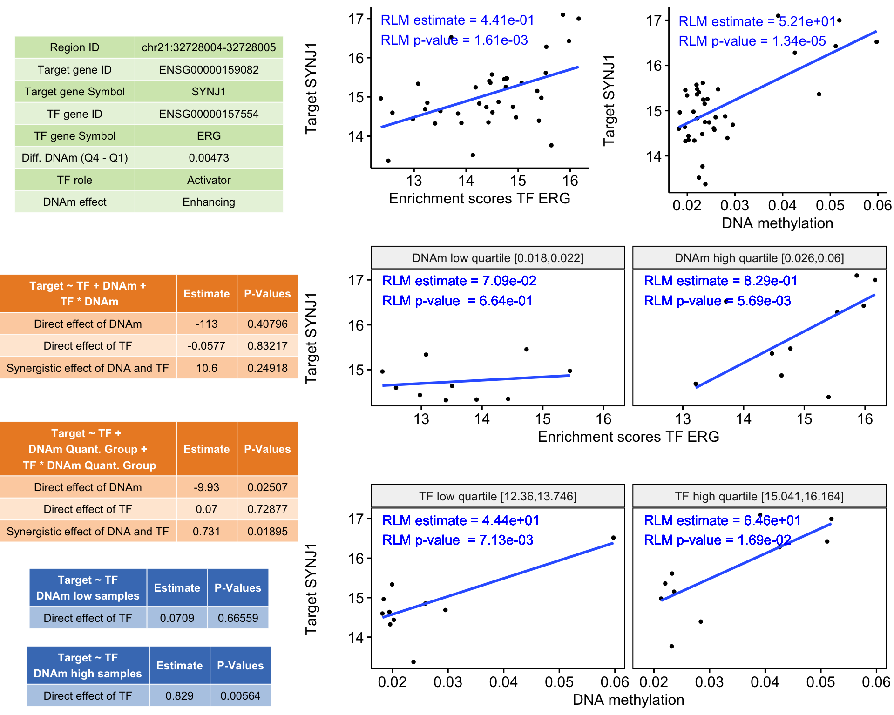

MethReg: estimating regulatory potential of DNA methylation changes in epigenome-wide association studies
Tiago Chedraoui Silva1
Lily Wang2
MethReg.Rmd1. Introduction
Transcription factors (TFs) are proteins that facilitate the transcription of DNA into RNA. A number of recent studies have observed that the binding of TFs onto DNA can be affected by DNA methylation, and in turn, DNA methylation can also be added or removed by proteins associated with transcription factors (Bonder et al. 2017; Banovich et al. 2014; Zhu, Wang, and Qian 2016).
To provide functional annotations for differentially methylated regions (DMRs) and differentially methylated CpG sites (DMS), MethReg performs integrative analyses using matched DNA methylation and gene expression along with Transcription Factor Binding Sites (TFBS) data. MethReg evaluates, prioritizes and annotates DNA methylation regions (or sites) with high regulatory potential that works synergistically with TFs to regulate target gene expressions, without any additional ChIP-seq data.
The results from MethReg can be used to generate testable hypothesis on the synergistic collaboration of DNA methylation changes and TFs in gene regulation. MethReg can be used either to evaluate regulatory potentials of candidate regions or to search for methylation coupled TF regulatory processes in the entire genome.
2. Installation
You can install the development version of the package from GitHub using the following code:
devtools::install_github("TransBioInfoLab/MethReg")
After the package is successfully installed you can load its functions with:
library(MethReg)
3. Dataset
The input of MethReg are DNA methylation and gene expression datasets measured on the same set of samples. Using additional information from the JASPAR2000 database, we will then create a data frame with information on the triplet: CpG (or DMR), TF and target gene.
For illustration, we will use chromosome 21 data from 38 TCGA-COAD (colon cancer) samples.
3.1 Input DNA methylation dataset
The DNA methylation dataset is a matrix with methylation beta or M-values. If there are potential confounding factors (e.g. batch effect, age, sex) in the dataset, this matrix would contain residuals from fitting linear regression instead (see details Section 7 “Controlling effects from confounding variables” below).
The samples are in the columns and methylation regions or probes are in the rows.
3.1.1 Analysis for individual CpGs data
We will analyze all CpGs on chromosome 21 in this vignette.
However, oftentimes, the methylation data can also be, for example, differentially methylated sites (DMS) or differentially methylated regions (DMRs) obtained in an epigenome-wide association study (EWAS) study.
dna.met.chr21[1:5,1:5] #> TCGA-3L-AA1B-01A TCGA-4N-A93T-01A TCGA-4T-AA8H-01A TCGA-5M-AAT4-01A #> cg00002080 0.6454046 0.5933725 0.54955509 0.81987982 #> cg00004533 0.9655396 0.9640490 0.96690671 0.95510446 #> cg00009944 0.5437705 0.2803064 0.42918909 0.60734630 #> cg00025591 0.4021317 0.7953653 0.41816364 0.33241304 #> cg00026030 0.1114705 0.1012902 0.06834467 0.08594876 #> TCGA-5M-AAT5-01A #> cg00002080 0.79171160 #> cg00004533 0.96061252 #> cg00009944 0.47555585 #> cg00025591 0.67251468 #> cg00026030 0.06715677
We will first create a SummarizedExperiment object with the function make_se_from_dnam_probes. This function will use the Sesame package to map the array probes into genomic regions.
dna.met.chr21.se <- make_se_from_dnam_probes( dnam = dna.met.chr21, genome = "hg38", arrayType = "450k" ) #> o Creating a SummarizedExperiment from DNA methylation input #> oo Fetching probes metadata #> oo Removing masked probes #> oo Preparing SummarizedExperiment object
dna.met.chr21.se #> class: RangedSummarizedExperiment #> dim: 2918 38 #> metadata(2): genome arrayType #> assays(1): '' #> rownames(2918): chr21:10450634-10450635 chr21:10520974-10520975 ... #> chr21:46670216-46670217 chr21:46670596-46670597 #> rowData names(53): address_A address_B ... MASK_general probeID #> colnames(38): TCGA-3L-AA1B-01A TCGA-4N-A93T-01A ... TCGA-A6-5656-01B #> TCGA-A6-5657-01A #> colData names(1): samples SummarizedExperiment::rowRanges(dna.met.chr21.se)[1:4,1:4] #> GRanges object with 4 ranges and 4 metadata columns: #> seqnames ranges strand | address_A #> <Rle> <IRanges> <Rle> | <integer> #> chr21:10450634-10450635 chr21 10450634-10450635 * | 74716393 #> chr21:10520974-10520975 chr21 10520974-10520975 * | 29756401 #> chr21:10521044-10521045 chr21 10521044-10521045 * | 15617483 #> chr21:10521122-10521123 chr21 10521122-10521123 * | 33810384 #> address_B channel designType #> <integer> <character> <character> #> chr21:10450634-10450635 <NA> Both II #> chr21:10520974-10520975 20622400 Red I #> chr21:10521044-10521045 <NA> Both II #> chr21:10521122-10521123 37781360 Grn I #> ------- #> seqinfo: 26 sequences from an unspecified genome; no seqlengths
3.1.2 Analysis of DMRs
Differentially Methylated Regions (DMRs) associated with phenotypes such as tumor stage can be obtained from R packages such as coMethDMR, comb-p, DMRcate and many others. The methylation levels in multiple CpGs within the DMRs need to be summarized (e.g. using medians), then the analysis for DMR will proceed in the same way as those for CpGs. See Section 6 “Identifying co-methylated clusters and summarizing regions using medians for DMRs” below for more details.
3.2 Input gene expression dataset
The gene expression dataset is a matrix with log2 transformed and normalized gene expression values. If there are potential confounding factors (e.g. batch effect, age, sex) in the dataset, this matrix can also contain residuals from linear regression instead (see Section 7 “Controlling effects from confounding variables” below).
The samples are in the columns and the genes are in the rows.
gene.exp.chr21 <- get(data("gene.exp.chr21.log2", package = "MethReg")) gene.exp.chr21[1:5,1:5] #> TCGA-3L-AA1B-01A TCGA-4N-A93T-01A TCGA-4T-AA8H-01A #> ENSG00000141956 14.64438 14.65342 14.09232 #> ENSG00000141959 19.33519 20.03720 19.76128 #> ENSG00000142149 17.27832 16.02392 18.16079 #> ENSG00000142156 20.38689 18.83080 18.02720 #> ENSG00000142166 17.89172 18.06625 18.47187 #> TCGA-5M-AAT4-01A TCGA-5M-AAT5-01A #> ENSG00000141956 14.60680 14.58640 #> ENSG00000141959 19.57854 18.27442 #> ENSG00000142149 15.84463 14.79654 #> ENSG00000142156 18.91380 18.71926 #> ENSG00000142166 17.40467 16.71412
We will also create a SummarizedExperiment object for the gene expression data. This object will contain the genomic information for each gene.
gene.exp.chr21.se <- make_se_from_gene_matrix(gene.exp.chr21) #> o Creating a SummarizedExperiment from gene expression input gene.exp.chr21.se #> class: RangedSummarizedExperiment #> dim: 752 38 #> metadata(1): genome #> assays(1): '' #> rownames(752): ENSG00000141956 ENSG00000141959 ... ENSG00000281420 #> ENSG00000281903 #> rowData names(2): ensembl_gene_id external_gene_name #> colnames(38): TCGA-3L-AA1B-01A TCGA-4N-A93T-01A ... TCGA-A6-5656-01B #> TCGA-A6-5657-01A #> colData names(1): samples SummarizedExperiment::rowRanges(gene.exp.chr21.se)[1:5,] #> GRanges object with 5 ranges and 2 metadata columns: #> seqnames ranges strand | ensembl_gene_id #> <Rle> <IRanges> <Rle> | <character> #> ENSG00000141956 chr21 41798225-41879482 - | ENSG00000141956 #> ENSG00000141959 chr21 44300051-44327376 + | ENSG00000141959 #> ENSG00000142149 chr21 31873020-32044633 + | ENSG00000142149 #> ENSG00000142156 chr21 45981769-46005050 + | ENSG00000142156 #> ENSG00000142166 chr21 33324429-33359864 + | ENSG00000142166 #> external_gene_name #> <character> #> ENSG00000141956 PRDM15 #> ENSG00000141959 PFKL #> ENSG00000142149 HUNK #> ENSG00000142156 COL6A1 #> ENSG00000142166 IFNAR1 #> ------- #> seqinfo: 24 sequences from an unspecified genome; no seqlengths
3.3 Creating triplet dataset
To create the triplet dataset of CpGs, target genes and TFs, we first link each CpG with target gene (CpG region-target gene dataset). Next, we link each CpG with TFs that have binding sites nearby (CpG region-TF dataset). Finally, we merge the two datasets by CpGs.
Mapping Regions to the target gene
In this section, regions refer to the regions where CpGs are located. The function get_region_target_gene provides three different methods to link a region to a target gene:
- Mapping the region to the closest gene (
method = "genes.promoter.overlap") - Mapping the region to a specific number of genes upstream down/upstream of the region (
method = "nearby.genes") (Silva et al. 2019). - Mapping the region to all the genes within a window (default size = 500 kbp around the region, i.e. +- 250 kbp from start or end of the region) (
method = "window") (Reese et al. 2019).
/PanCancer/MethReg/vignettes/mapping_target_strategies.png)
Figure 1 - Different target linking strategies
For the analysis of probes in gene promoter region, we recommend setting method = "genes.promoter.overlap", or method = "closest.gene". For the analysis of probes in distal regions, we recommend setting either method = "window" or method = "nearby.genes". Note that the distal analysis will be more time and resource consuming.
As an example, the following scripts link CpGs with the probes in gene promoter region (method 1. above)
# Get CpG information probes.gr <- SummarizedExperiment::rowRanges(dna.met.chr21.se) class(probes.gr) #> [1] "GRanges" #> attr(,"package") #> [1] "GenomicRanges"
# Map probes to nearest gene region.target.closest <- get_region_target_gene( regions.gr = probes.gr, genome = "hg38", method = "genes.promoter.overlap", promoter.upstream.dist.tss = 2000, promoter.downstream.dist.tss = 2000 ) #> Mapping regions to the closest gene dim(region.target.closest) #> [1] 1955 3 region.target.closest #> # A tibble: 1,955 x 3 #> regionID target_gene_name target #> <chr> <chr> <chr> #> 1 chr21:10520974-10520975 TPTE ENSG00000274391 #> 2 chr21:10521044-10521045 TPTE ENSG00000274391 #> 3 chr21:10521122-10521123 TPTE ENSG00000274391 #> 4 chr21:10521553-10521554 TPTE ENSG00000274391 #> 5 chr21:14027669-14027670 AP001347.1 ENSG00000224905 #> 6 chr21:14063939-14063940 ANKRD20A18P ENSG00000249493 #> 7 chr21:14070786-14070787 RNA5SP488 ENSG00000201812 #> 8 chr21:14071916-14071917 RNA5SP488 ENSG00000201812 #> 9 chr21:14215491-14215492 RBM11 ENSG00000185272 #> 10 chr21:14216042-14216043 RBM11 ENSG00000185272 #> # … with 1,945 more rows
Alternatively, we can also link each probe with genes within 500 kb window (method 2).
# Map probes to genes within 500kb window region.target.window <- get_region_target_gene( regions.gr = probes.gr, genome = "hg38", method = "window", window.size = 500 * 10^3, rm.promoter.regions.from.distal.linking = TRUE, promoter.upstream.dist.tss = 2000, promoter.downstream.dist.tss = 2000 ) #> Removing regions overlapping promoter regions #> o Get promoter regions for hg38 #> o Remove promoter regions #> Mapping regions to genes within a window of size: 5e+05 bp dim(region.target.window) #> [1] 25610 3 region.target.window #> # A tibble: 25,610 x 3 #> regionID target target_gene_name #> <chr> <chr> <chr> #> 1 chr21:10450634-10450635 ENSG00000277693 AP003900.1 #> 2 chr21:10450634-10450635 ENSG00000275945 EIF3FP1 #> 3 chr21:10450634-10450635 ENSG00000275592 VN1R7P #> 4 chr21:10450634-10450635 ENSG00000278106 AF254983.2 #> 5 chr21:10450634-10450635 ENSG00000187172 BAGE2 #> 6 chr21:10450634-10450635 ENSG00000273840 AF254983.1 #> 7 chr21:10450634-10450635 ENSG00000274391 TPTE #> 8 chr21:10450634-10450635 ENSG00000278678 CYCSP41 #> 9 chr21:10450634-10450635 ENSG00000273872 SLC25A15P4 #> 10 chr21:10450634-10450635 ENSG00000276556 AF254982.1 #> # … with 25,600 more rows
For method 3, to map probes to 5 nearest upstream and downstream genes:
# Map probes to 5 genes upstream and 5 downstream region.target.nearby.genes <- get_region_target_gene( regions.gr = probes.gr, genome = "hg38", method = "nearby.genes", num.flanking.genes = 5, rm.promoter.regions.from.distal.linking = TRUE, promoter.upstream.dist.tss = 2000, promoter.downstream.dist.tss = 2000 ) #> Removing regions overlapping promoter regions #> o Get promoter regions for hg38 #> o Remove promoter regions #> Identifying genes close to the region #> Identifying 5 genes downstream to the region #> Identifying 5 genes upstream of the region #> Identifying gene position for each region dim(region.target.window) #> [1] 25610 3 region.target.window #> # A tibble: 25,610 x 3 #> regionID target target_gene_name #> <chr> <chr> <chr> #> 1 chr21:10450634-10450635 ENSG00000277693 AP003900.1 #> 2 chr21:10450634-10450635 ENSG00000275945 EIF3FP1 #> 3 chr21:10450634-10450635 ENSG00000275592 VN1R7P #> 4 chr21:10450634-10450635 ENSG00000278106 AF254983.2 #> 5 chr21:10450634-10450635 ENSG00000187172 BAGE2 #> 6 chr21:10450634-10450635 ENSG00000273840 AF254983.1 #> 7 chr21:10450634-10450635 ENSG00000274391 TPTE #> 8 chr21:10450634-10450635 ENSG00000278678 CYCSP41 #> 9 chr21:10450634-10450635 ENSG00000273872 SLC25A15P4 #> 10 chr21:10450634-10450635 ENSG00000276556 AF254982.1 #> # … with 25,600 more rows
Mapping Regions to TF
In this section, regions refer to the regions where CpGs are located. The function get_tf_in_region uses motifmatchr (Schep 2020) to scan these regions for occurrences of motifs in the JASPAR database.
JASPAR 2020 is an open-access database of curated, non-redundant transcription factor (TF)-binding profiles (Baranasic 2020; Fornes et al. 2020), which contains more the 500 human TF motifs.
The argument window.size will be used to extend the region when scanning for the motifs, for example, a window.size of 50 will add 25 bp upstream and 25 bp downstream of the original region.
region.tf <- get_tf_in_region( region = probes.gr, genome = "hg38", window.size = 50, p.cutoff = 5e-5 ) #> #> Evaluating 554 JASPAR Human TF motifs #> This may take a while... #> #> Attaching package: 'S4Vectors' #> The following objects are masked from 'package:dplyr': #> #> first, rename #> The following object is masked from 'package:base': #> #> expand.grid #> #> Attaching package: 'IRanges' #> The following objects are masked from 'package:dplyr': #> #> collapse, desc, slice #> #> Attaching package: 'Biostrings' #> The following object is masked from 'package:base': #> #> strsplit #> Preparing output
head(region.tf) #> regionID TF_external_gene_name TF #> 1 chr21:25735671-25735672 FOXF2 ENSG00000137273 #> 2 chr21:29298095-29298096 FOXF2 ENSG00000137273 #> 3 chr21:37074284-37074285 FOXF2 ENSG00000137273 #> 4 chr21:38404512-38404513 FOXF2 ENSG00000137273 #> 5 chr21:41165367-41165368 FOXF2 ENSG00000137273 #> 6 chr21:41762207-41762208 FOXF2 ENSG00000137273 dim(region.tf) #> [1] 8595 3
Triplet data frame – matching DMR (or CpGs) with TFs and target genes
We create the triplet dataset by merging the CpG region-target gene dataset and the CpG region-TF dataset.
# Merging the results from the previous sections (region and target, and region and TF) triplet <- dplyr::inner_join(region.target.closest, region.tf)
# Since our data has only chr21 we will only keep TFs on chr21. triplet <- triplet[triplet$TF %in% rownames(gene.exp.chr21.se),]
The triplet is a data frame with the following columns:
-
target: gene identifier (obtained from row names of the gene expression matrix), -
regionID: region/CpG identifier (obtained from row names of the DNA methylation matrix) -
TF: gene identifier (obtained from the row names of the gene expression matrix)
head(triplet) #> # A tibble: 6 x 5 #> regionID target_gene_name target TF_external_gene_n… TF #> <chr> <chr> <chr> <chr> <chr> #> 1 chr21:25562143-2… MIR155HG ENSG0000023… GABPA ENSG00000… #> 2 chr21:25734910-2… GABPA ENSG0000015… ERG ENSG00000… #> 3 chr21:25734910-2… GABPA ENSG0000015… ETS2 ENSG00000… #> 4 chr21:25734910-2… ATP5PF ENSG0000015… ERG ENSG00000… #> 5 chr21:25734910-2… ATP5PF ENSG0000015… ETS2 ENSG00000… #> 6 chr21:26846277-2… ADAMTS1 ENSG0000015… PKNOX1 ENSG00000…
Note that there may be multiple rows for a CpG region, when multiple target gene and/or TFs are found close to it.
4. Evaluating the regulatory potential of CpGs (or DMRs)
Because TF binding to DNA can be influenced by (or influences) DNA methylation levels nearby (Yin et al. 2017), target gene expression levels are often resulted from the synergistic effects of both TF and DNA methylation. In other words, TF activities in gene regulation is often affected by DNA methylation.
Our goal then is to highlight DNA methylation regions (or CpGs) where these synergistic DNAm and TF collaborations occur. We will perform analyses using the 3 datasets described above in Section 3:
- An input DNA methylation matrix
- An input Gene expression matrix
- The created triplet data frame with expression values for DNA methylation region, TF, and target gene
4.1 Analysis using model with methylation by TF interaction
The function interaction_model assess the regulatory impact of DNA methylation on TF regulation of target genes via two approaches:
Model 1 (considering DNAm values as a continuous variable) - we fit a model with TF by DNA methylation interaction using all samples.
\[log_2(RNA target) \sim log_2(TF) + DNAm + log_2(TF) * DNAm\] Interpretation : Note that Model 1 partitions the effects of DNA methylation and TF on target gene expressions into three categories:
-
log_2(TF)- models direct effect of TF on target gene expression; -
DNAm- models direct effect of DNA methylation on target gene expression; -
log_2(TF) × DNAminteraction term - models synergistic effect of TF and DNA methylation, that is, how effect of TF on target gene expression is modified by DNA methylation.
To identify the cases where DNAm collaborate with TFs to influence gene expression, we’re typically interested in those triplets with significant log_2(TF) × DNAm interaction term, although the cases for which log_2(TF) or DNAm are significant can also be interesting.
Model 2 (considering DNAm values as a binary variable) - we define a binary variable DNAm Group for DNA methylation values (high = 1, low = 0). That is, samples with the highest DNAm levels (top 25 percent) has high = 1, samples with lowest DNAm levels (bottom 25 pecent) has high = 0.
Note that in this implementation, only samples with DNAm values in the first and last quartiles are considered.
\[log_2(RNA target) \sim log_2(TF) + \text{DNAm Group} + log_2(TF) * \text{DNAm Group}\]
results.interaction.model <- interaction_model( triplet = triplet, dnam = dna.met.chr21.se, exp = gene.exp.chr21.se )
The output of interaction_model function will be a data frame with the following variables:
-
pval_<variable>: p-value for a tested variable (methylation or TF), given the other variables included in the model. -
estimate_<variable>: estimated effect for a variable. If estimate > 0, increasing values of the variable corresponds to increased outcome values (target gene expression). If estimate < 0, increasing values of the variable correspond to decreased target gene expression levels.
The following columns are provided for the results of fitting Model 1 to triplet data:
- direct effect of methylation:
-
pval_met: p-value for DNA methylation variable -
estimate_met: estimated DNA methylation effect
-
- direct effect of TF:
-
pval_rna.tf: p-value for TF expression -
estimate_rna.tf: estimated TF effect
-
- synergistic effects of methylation and TF:
-
pval_met.rna.tf: : p-value for DNA methylation by TF interaction -
estimate_met.rna.tf: estimated DNA methylation by TF interaction effect
-
dim(results.interaction.model) #> [1] 68 33 colnames(results.interaction.model) #> [1] "regionID" "target_gene_name" #> [3] "target" "TF_external_gene_name" #> [5] "TF" "TF_symbol" #> [7] "target_symbol" "pval_met" #> [9] "pval_rna.tf" "pval_met:rna.tf" #> [11] "estimate_met" "estimate_rna.tf" #> [13] "estimate_met:rna.tf" "Model.interaction" #> [15] "met.q4_minus_q1" "quant_pval_metGrp" #> [17] "quant_pval_rna.tf" "quant_pval_metGrp:rna.tf" #> [19] "quant_estimate_metGrp" "quant_estimate_rna.tf" #> [21] "quant_estimate_metGrp:rna.tf" "Model.quantile" #> [23] "Wilcoxon_pval_tf_q4_vs_q1" "% 0 target genes (All samples)" #> [25] "% of 0 target genes (Q1 and Q4)" "Max_interaction_pval" #> [27] "fdr_met" "fdr_rna.tf" #> [29] "fdr_met:rna.tf" "quant_fdr_metGrp" #> [31] "quant_fdr_rna.tf" "quant_fdr_metGrp:rna.tf" #> [33] "Wilcoxon_fdr_tf_q4_vs_q1" # Results for full model (with all samples) results.interaction.model %>% dplyr::select( c(1,4,5,grep("quant",colnames(results.interaction.model),invert = TRUE)) ) %>% head #> regionID TF_external_gene_name TF #> 1 chr21:25562143-25562144 GABPA ENSG00000154727 #> 2 chr21:25734910-25734911 ERG ENSG00000157554 #> 3 chr21:25734910-25734911 ETS2 ENSG00000157557 #> 4 chr21:25734910-25734911 ERG ENSG00000157554 #> 5 chr21:25734910-25734911 ETS2 ENSG00000157557 #> 6 chr21:26846277-26846278 PKNOX1 ENSG00000160199 #> target_gene_name target TF_symbol target_symbol pval_met #> 1 MIR155HG ENSG00000234883 GABPA MIR155HG 0.008167786 #> 2 GABPA ENSG00000154727 ERG GABPA 0.076679449 #> 3 GABPA ENSG00000154727 ETS2 GABPA 0.520607286 #> 4 ATP5PF ENSG00000154723 ERG ATP5PF 0.041144530 #> 5 ATP5PF ENSG00000154723 ETS2 ATP5PF 0.030559815 #> 6 ADAMTS1 ENSG00000154734 PKNOX1 ADAMTS1 0.601180350 #> pval_rna.tf pval_met:rna.tf estimate_met estimate_rna.tf estimate_met:rna.tf #> 1 0.03416955 0.006591572 -2115.9323 -2.21701395 129.3841033 #> 2 0.25648848 0.063121207 -222.4866 -0.45480746 18.1368314 #> 3 0.71175380 0.525774612 363.1711 0.31890723 -16.7728721 #> 4 0.18779991 0.039604217 222.3023 0.45521710 -17.3631376 #> 5 0.02636596 0.030144644 -1104.9200 -1.73905127 51.8116457 #> 6 0.95310240 0.647898518 -14.7225 -0.04145077 0.7896601 #> Model.interaction met.q4_minus_q1 Wilcoxon_pval_tf_q4_vs_q1 #> 1 Robust Linear Model 0.003748681 0.1903159 #> 2 Robust Linear Model 0.010247921 0.0524259 #> 3 Robust Linear Model 0.010247921 0.3930481 #> 4 Robust Linear Model 0.010247921 0.0524259 #> 5 Robust Linear Model 0.010247921 0.3930481 #> 6 Robust Linear Model 0.487499687 0.1230055 #> % 0 target genes (All samples) % of 0 target genes (Q1 and Q4) #> 1 0 % 0 % #> 2 0 % 0 % #> 3 0 % 0 % #> 4 0 % 0 % #> 5 0 % 0 % #> 6 0 % 0 % #> Max_interaction_pval fdr_met fdr_rna.tf fdr_met:rna.tf #> 1 0.41112063 0.03702729 0.1150749 0.02988179 #> 2 0.12245100 0.22670446 0.4844782 0.19510191 #> 3 0.88153978 0.78669545 0.8712619 0.76069518 #> 4 0.04446645 0.15862165 0.4239113 0.14174141 #> 5 0.39758555 0.12987921 0.1054638 0.11608929 #> 6 0.77890407 0.83532165 0.9673278 0.88114198 #> Wilcoxon_fdr_tf_q4_vs_q1 #> 1 0.3045054 #> 2 0.1258222 #> 3 0.5240642 #> 4 0.1258222 #> 5 0.5240642 #> 6 0.2203637
The following columns are provided for the results of fitting Model 2 (quartile model) to triplet data:
- direct effect of methylation:
-
quant_pval_metGrp: p-value for binary DNA methylation variable -
quant_estimates_metGrp: estimated DNA methylation effect
-
- direct effect of TF:
-
quant_pval_rna.tf: p-value for TF expression -
quant_estimates_rna.tf: estimated TF effect
-
- synergistic effects of methylation and TF:
-
quant_pval_metGrp:rna.tf: : p-value for DNA methylation by TF interaction -
quant_estimates_metGrp:rna.tf: estimated DNA methylation by TF interaction effect
-
# Results for quartile model results.interaction.model %>% dplyr::select( c(1,4,5,grep("quant",colnames(results.interaction.model))) ) %>% head #> regionID TF_external_gene_name TF #> 1 chr21:25562143-25562144 GABPA ENSG00000154727 #> 2 chr21:25734910-25734911 ERG ENSG00000157554 #> 3 chr21:25734910-25734911 ETS2 ENSG00000157557 #> 4 chr21:25734910-25734911 ERG ENSG00000157554 #> 5 chr21:25734910-25734911 ETS2 ENSG00000157557 #> 6 chr21:26846277-26846278 PKNOX1 ENSG00000160199 #> quant_pval_metGrp quant_pval_rna.tf quant_pval_metGrp:rna.tf #> 1 0.45530066 0.1118582 0.41112063 #> 2 0.14450079 0.5097568 0.12245100 #> 3 0.91885966 0.9165923 0.88153978 #> 4 0.05102383 0.2112489 0.04446645 #> 5 0.37862961 0.2438708 0.39758555 #> 6 0.74758107 0.9994336 0.77890407 #> quant_estimate_metGrp quant_estimate_rna.tf quant_estimate_metGrp:rna.tf #> 1 -6.521779 0.7448068805 0.4279239 #> 2 -9.736174 -0.2368362509 0.7214723 #> 3 -1.703010 -0.0481649276 0.1187107 #> 4 12.057209 0.4120340913 -0.8690609 #> 5 -12.876617 -0.4733414619 0.5888877 #> 6 -7.546100 -0.0007817679 0.4034814 #> Model.quantile quant_fdr_metGrp quant_fdr_rna.tf quant_fdr_metGrp:rna.tf #> 1 Robust Linear Model 0.6260384 0.3568808 0.5898687 #> 2 Robust Linear Model 0.2577582 0.8538426 0.2309076 #> 3 Robust Linear Model 0.9626149 0.9999246 0.9290601 #> 4 Robust Linear Model 0.1295220 0.5666616 0.1119294 #> 5 Robust Linear Model 0.5553234 0.6051608 0.5831255 #> 6 Robust Linear Model 0.8637621 0.9999246 0.8832931
To select significant DNAm by TF interaction from both models, you can subset the results using the p-value from each linear model.
results.sig <- results.interaction.model %>% dplyr::filter(Max_interaction_pval < 0.05)
head(results.sig) #> regionID target_gene_name target #> 1 chr21:25734910-25734911 ATP5PF ENSG00000154723 #> 2 chr21:28992856-28992857 LTN1 ENSG00000198862 #> 3 chr21:32727998-32727999 SYNJ1 ENSG00000159082 #> 4 chr21:32727998-32727999 PAXBP1-AS1 ENSG00000238197 #> 5 chr21:32728004-32728005 SYNJ1 ENSG00000159082 #> 6 chr21:36320159-36320160 MORC3 ENSG00000159256 #> TF_external_gene_name TF TF_symbol target_symbol pval_met #> 1 ERG ENSG00000157554 ERG ATP5PF 4.114453e-02 #> 2 ERG ENSG00000157554 ERG LTN1 7.002924e-04 #> 3 GABPA ENSG00000154727 GABPA SYNJ1 1.801255e-03 #> 4 ERG ENSG00000157554 ERG PAXBP1-AS1 1.216009e-03 #> 5 GABPA ENSG00000154727 GABPA SYNJ1 4.198808e-02 #> 6 GABPA ENSG00000154727 GABPA MORC3 4.507449e-07 #> pval_rna.tf pval_met:rna.tf estimate_met estimate_rna.tf estimate_met:rna.tf #> 1 0.18779991 3.960422e-02 222.3023 0.45521710 -17.36314 #> 2 0.02447757 8.833081e-04 -305.0305 -1.04512987 20.80242 #> 3 0.91345971 1.677352e-03 -358.6139 -0.01611787 21.05786 #> 4 0.24991736 1.294250e-03 579.9883 0.31441942 -37.22977 #> 5 0.38094821 2.438462e-02 -322.0151 -0.18934706 19.85222 #> 6 0.03659763 1.531049e-07 -548.5240 -0.26628799 33.09948 #> Model.interaction met.q4_minus_q1 quant_pval_metGrp quant_pval_rna.tf #> 1 Robust Linear Model 0.010247921 5.102383e-02 0.211248870 #> 2 Robust Linear Model 0.040039409 1.695171e-06 0.633456071 #> 3 Robust Linear Model 0.003140598 9.408399e-04 0.219898513 #> 4 Robust Linear Model 0.003140598 6.711430e-02 0.459104203 #> 5 Robust Linear Model 0.004731054 3.762372e-04 0.343596092 #> 6 Robust Linear Model 0.006767978 1.753060e-03 0.005571983 #> quant_pval_metGrp:rna.tf quant_estimate_metGrp quant_estimate_rna.tf #> 1 4.446645e-02 12.057209 0.41203409 #> 2 1.692317e-06 -27.661213 -0.08389150 #> 3 6.821033e-04 -12.274965 0.10822193 #> 4 4.578931e-02 -19.506660 -0.37687086 #> 5 2.167466e-04 -11.513778 0.07895693 #> 6 1.452985e-03 -7.944591 0.36407941 #> quant_estimate_metGrp:rna.tf Model.quantile Wilcoxon_pval_tf_q4_vs_q1 #> 1 -0.8690609 Robust Linear Model 0.05242590 #> 2 1.9025146 Robust Linear Model 0.16549395 #> 3 0.7293916 Robust Linear Model 0.02880556 #> 4 1.4828624 Robust Linear Model 0.07525601 #> 5 0.7079154 Robust Linear Model 0.01854338 #> 6 0.4843103 Robust Linear Model 0.16549395 #> % 0 target genes (All samples) % of 0 target genes (Q1 and Q4) #> 1 0 % 0 % #> 2 0 % 0 % #> 3 0 % 0 % #> 4 2.63 % 5 % #> 5 0 % 0 % #> 6 0 % 0 % #> Max_interaction_pval fdr_met fdr_rna.tf fdr_met:rna.tf quant_fdr_metGrp #> 1 0.0444664514 1.586216e-01 0.4239113 1.417414e-01 1.295220e-01 #> 2 0.0008833081 4.761988e-03 0.1043260 6.006495e-03 2.797032e-05 #> 3 0.0016773519 1.020711e-02 0.9569191 9.504994e-03 5.645040e-03 #> 4 0.0457893127 7.517144e-03 0.4844782 8.000818e-03 1.640572e-01 #> 5 0.0243846195 1.586216e-01 0.6279960 1.036346e-01 2.483166e-03 #> 6 0.0014529853 6.130130e-06 0.1150749 2.082227e-06 9.641828e-03 #> quant_fdr_rna.tf quant_fdr_metGrp:rna.tf Wilcoxon_fdr_tf_q4_vs_q1 #> 1 0.56666155 1.119294e-01 0.12582217 #> 2 0.91736880 2.792323e-05 0.27080828 #> 3 0.56666155 4.092620e-03 0.09017393 #> 4 0.82296618 1.119294e-01 0.15051203 #> 5 0.68053455 1.430527e-03 0.07853665 #> 6 0.02871715 7.376695e-03 0.27080828
4.2 Stratified analysis by high and low DNA methylation levels
For triplets with significant log_2(TF) × DNAm interaction effect identified above, we can further assess how gene regulation by TF changes when DNAm is high or low. To this end, the function stratified_model fits two separate models (see below) to only samples with the highest DNAm levels (top 25 percent), and then to only samples with lowest DNAm levels (bottom 25 percent), separately.
\[\text{Stratified Model: } log_2(RNA target) \sim log_2(TF)\]
results.stratified.model <- stratified_model( triplet = triplet, dnam = dna.met.chr21.se, exp = gene.exp.chr21.se )
results.stratified.model %>% head #> regionID target_gene_name target #> 1 chr21:25562143-25562144 MIR155HG ENSG00000234883 #> 2 chr21:25734910-25734911 GABPA ENSG00000154727 #> 3 chr21:25734910-25734911 GABPA ENSG00000154727 #> 4 chr21:25734910-25734911 ATP5PF ENSG00000154723 #> 5 chr21:25734910-25734911 ATP5PF ENSG00000154723 #> 6 chr21:26846277-26846278 ADAMTS1 ENSG00000154734 #> TF_external_gene_name TF TF_symbol target_symbol #> 1 GABPA ENSG00000154727 GABPA MIR155HG #> 2 ERG ENSG00000157554 ERG GABPA #> 3 ETS2 ENSG00000157557 ETS2 GABPA #> 4 ERG ENSG00000157554 ERG ATP5PF #> 5 ETS2 ENSG00000157557 ETS2 ATP5PF #> 6 PKNOX1 ENSG00000160199 PKNOX1 ADAMTS1 #> DNAmlow_pval_rna.tf DNAmlow_estimate_rna.tf DNAmhigh_pval_rna.tf #> 1 0.1632286 0.74308520 0.0009576798 #> 2 0.5499511 -0.22440861 0.1025406881 #> 3 0.9775196 -0.01274892 0.9224975745 #> 4 0.2413584 0.41203409 0.0862123233 #> 5 0.2283042 -0.46848956 0.8512898169 #> 6 0.9582855 -0.07594386 0.5802354541 #> DNAmhigh_estimate_rna.tf DNAm.effect TF.role #> 1 1.17177452 Enhancing Activator #> 2 0.48482816 Enhancing Activator #> 3 0.06794328 Enhancing Activator #> 4 -0.45659955 Enhancing Repressor #> 5 0.11662715 Attenuating Repressor #> 6 0.40173638 Enhancing Activator
4.3 Visualization of data
The functions plot_interaction_model will create figures to visualize the data, in a way that corresponds to the linear model we considered above. It requires the output from the function interaction_model (a dataframe), the DNA methylation matrix and the gene expression matrix as input.
plots <- plot_interaction_model( triplet.results = results.interaction.model, dnam = dna.met.chr21.se, exp = gene.exp.chr21.se )
plots[[29]]

The first row of the figures shows pairwise associations between DNA methylation, TF and target gene expression levels.
The second row of the figures show how much TF activity on target gene expression levels vary by DNA methylation levels. When TF by methylation interaction is significant (Section 4.1), we expect the association between TF and target gene expression vary depending on whether DNA methylation is low or high.
In this example, when DNA methylation is low, target gene expression is relatively independent of the amount of TF available. On the other hand, when DNA methylation level is high, more abundant TF corresponds to increased gene expression (an activator TF). One possibility is that DNA methylation might enhance TF binding in this case. This is an example where DNA methylation and TF work synergistically to affect target gene expression.
While the main goal of MethReg is to prioritize methylation CpGs, also note that without stratifying by DNA methylation, the overall TF-target effects (p = 0.142) is not as significant as the association in stratified analysis in high methylation samples (p = 0.00508). This demonstrates that by additionally modeling DNA methylation, we can also nominate TF – target associations that might have been missed otherwise.
If you want to highlight different group of samples, you can also use the metadata argument with a dataframe where rownames are the samples (same order as the columns of the DNAm and gene expression), and the columns highlight the groups. Here is an example:
plots <- plot_stratified_model( triplet.results = results.stratified.model[29 ,], dnam = dna.met.chr21.se, exp = gene.exp.chr21.se, metadata = metadata )
plots[[1]]
5. Results interpretation
Shown below are some expected results from fitting Models 1 & 2 described in Section 4.1 above, depending on TF binding preferences. Please note that there can be more possible scenarios than those listed here, therefore, careful evaluation of the statistical models and visualization of data as described in Section 4 are needed to gain a good understanding of the multi-omics data.
/PanCancer/MethReg/vignettes/scenarios.png)
Figure 2 - Different biological scenarios considered by MethReg
6. Identifying co-methylated clusters of CpGs in DMRs and summarizing regions with multiple CpGs
Given regions for DMRs, the R package coMethDMR can be used to identify co-methylated regions (Gomez et al. 2019). To install it, please use the following command:
devtools::install_github("TransBioInfoLab/coMethDMR")
We can then summarize methylation levels from multiple CpGs within each region using median.
For illustration, we will use probe clusters in predefined genomic regions from the coMethDMR R package here.
probes.cluster <- coMethDMR::getPredefinedCluster( arrayType = "450k", clusterType = "regions" )
For real data analysis, please replace probes.cluster with probes in DMRs identified in epigenome-wide association study. The coMethDMR::GetCpGsInAllRegion function can be used to extract probes within the DMRs.
Here are the sample scripts for this task:
probes.cluster <- coMethDMR::GetCpGsInAllRegion( regionName_char = c("chr21:37432493-37432782", "chr21:18884682-18885210", "chr21:27107799-27107982"), arrayType = "450k" ) probes.cluster
Next we find co-methylated regions within the DMRs.
data("dna.met.chr21") # only keep DNAm values for the probes obtained above dna.met.chr21 <- dna.met.chr21[rownames(dna.met.chr21) %in% unique(unlist(probes.cluster)),]
coMeth_ls <- coMethDMR::CoMethAllRegions( dnam = dna.met.chr21, betaToM = TRUE, method = "spearman", minPairwiseCorr = 0.2, CpGs_ls = probes.cluster, arrayType = "450k", returnAllCpGs = FALSE, output = "CpGs", nCores_int = 1 )
Finally, we compute median methylation of co-methylated regions.
median.df.tumor <- plyr::ldply( coMeth_ls[!duplicated(names(coMeth_ls))], function(probes){ matrixStats::colMedians(dna.met.chr21[probes,]) }, .progress = "time",.parallel = FALSE )
rownames(median.df.tumor) <- median.df.tumor$.id median.df.tumor$.id <- NULL colnames(median.df.tumor) <- colnames(dna.met.chr21) dim(median.df.tumor) head(median.df.tumor)
The analysis described in Section 3.3 and Section 4 can then be performed for DMRs using median.df.tumor, in the same way as those for dataset dna.met.chr21.
7. Controlling effects from confounding variables
Both gene expressions and DNA methylation levels can be affected by age, sex, shifting in cell types, batch effects and other confounding (or covariate) variables. In this section, we illustrate analysis workflow that reduces confounding effects, by first extracting the residual data with the function get_residuals, before fitting the models discussed above in Section 4.
The get_residuals function will use gene expression (or DNA methylation data) and phenotype data as input. To remove confounding effects in gene expression data, we use the get_residuals function which extract residuals after fitting the following model for gene expression data: \[log_2(RNA target) \sim covariate_{1} + covariate_{2} + ... + covariate_{N}\] or the following model for methylation data:
\[methylation.Mvalues \sim covariate_{1} + covariate_{2} + ... + covariate_{N}\]
data("gene.exp.chr21.log2") data("clinical") metadata <- clinical[,c("sample_type","gender")] gene.exp.chr21.residuals <- get_residuals(gene.exp.chr21, metadata) %>% as.matrix()
gene.exp.chr21.residuals[1:5,1:5]
data("dna.met.chr21") dna.met.chr21 <- make_se_from_dnam_probes( dnam = dna.met.chr21, genome = "hg38", arrayType = "450k", betaToM = TRUE ) dna.met.chr21.residuals <- get_residuals(dna.met.chr21, metadata) %>% as.matrix()
dna.met.chr21.residuals[1:5,1:5]
The models described in Section 4.1 can then be applied to these residuals data using the interaction_model function:
results <- interaction_model( triplet = triplet, dnam = dna.met.chr21.residuals, exp = gene.exp.chr21.residuals )
8. Session information
sessionInfo() #> R version 4.0.2 (2020-06-22) #> Platform: x86_64-apple-darwin17.0 (64-bit) #> Running under: macOS Catalina 10.15.6 #> #> Matrix products: default #> BLAS: /Library/Frameworks/R.framework/Versions/4.0/Resources/lib/libRblas.dylib #> LAPACK: /Library/Frameworks/R.framework/Versions/4.0/Resources/lib/libRlapack.dylib #> #> locale: #> [1] en_US.UTF-8/en_US.UTF-8/en_US.UTF-8/C/en_US.UTF-8/en_US.UTF-8 #> #> attached base packages: #> [1] stats4 parallel stats graphics grDevices utils datasets #> [8] methods base #> #> other attached packages: #> [1] BSgenome.Hsapiens.UCSC.hg38_1.4.3 BSgenome_1.56.0 #> [3] rtracklayer_1.48.0 Biostrings_2.56.0 #> [5] XVector_0.28.0 GenomicRanges_1.40.0 #> [7] GenomeInfoDb_1.24.2 IRanges_2.22.2 #> [9] S4Vectors_0.26.1 MethReg_0.1.0 #> [11] sesameData_1.6.0 ExperimentHub_1.14.2 #> [13] AnnotationHub_2.20.2 BiocFileCache_1.12.1 #> [15] dbplyr_1.4.4 BiocGenerics_0.34.0 #> [17] dplyr_1.0.2 #> #> loaded via a namespace (and not attached): #> [1] readxl_1.3.1 backports_1.1.9 #> [3] plyr_1.8.6 splines_4.0.2 #> [5] BiocParallel_1.22.0 ggplot2_3.3.2 #> [7] TFBSTools_1.26.0 digest_0.6.25 #> [9] foreach_1.5.0 htmltools_0.5.0 #> [11] GO.db_3.11.4 fansi_0.4.1 #> [13] magrittr_1.5 memoise_1.1.0 #> [15] doParallel_1.0.15 sfsmisc_1.1-7 #> [17] openxlsx_4.1.5 readr_1.3.1 #> [19] annotate_1.66.0 matrixStats_0.56.0 #> [21] R.utils_2.9.2 JASPAR2020_0.99.10 #> [23] pkgdown_1.5.1 prettyunits_1.1.1 #> [25] colorspace_1.4-1 blob_1.2.1 #> [27] rappdirs_0.3.1 haven_2.3.1 #> [29] xfun_0.16 crayon_1.3.4 #> [31] RCurl_1.98-1.2 TFMPvalue_0.0.8 #> [33] iterators_1.0.12 glue_1.4.1 #> [35] gtable_0.3.0 zlibbioc_1.34.0 #> [37] DelayedArray_0.14.1 car_3.0-9 #> [39] abind_1.4-5 scales_1.1.1 #> [41] pscl_1.5.5 DBI_1.1.0 #> [43] rstatix_0.6.0 Rcpp_1.0.5 #> [45] xtable_1.8-4 progress_1.2.2 #> [47] foreign_0.8-80 bit_4.0.4 #> [49] httr_1.4.2 ellipsis_0.3.1 #> [51] farver_2.0.3 pkgconfig_2.0.3 #> [53] XML_3.99-0.5 R.methodsS3_1.8.0 #> [55] utf8_1.1.4 labeling_0.3 #> [57] tidyselect_1.1.0 rlang_0.4.7 #> [59] reshape2_1.4.4 later_1.1.0.1 #> [61] AnnotationDbi_1.50.3 munsell_0.5.0 #> [63] BiocVersion_3.11.1 cellranger_1.1.0 #> [65] tools_4.0.2 cli_2.0.2 #> [67] DirichletMultinomial_1.30.0 generics_0.0.2 #> [69] RSQLite_2.2.0 broom_0.7.0 #> [71] evaluate_0.14 stringr_1.4.0 #> [73] fastmap_1.0.1 yaml_2.2.1 #> [75] knitr_1.29 bit64_4.0.2 #> [77] fs_1.5.0 zip_2.1.0 #> [79] caTools_1.18.0 purrr_0.3.4 #> [81] KEGGREST_1.28.0 nlme_3.1-149 #> [83] mime_0.9 R.oo_1.23.0 #> [85] poweRlaw_0.70.6 pracma_2.2.9 #> [87] compiler_4.0.2 rstudioapi_0.11 #> [89] curl_4.3 png_0.1-7 #> [91] interactiveDisplayBase_1.26.3 ggsignif_0.6.0 #> [93] tibble_3.0.3 stringi_1.4.6 #> [95] desc_1.2.0 forcats_0.5.0 #> [97] lattice_0.20-41 CNEr_1.24.0 #> [99] Matrix_1.2-18 vctrs_0.3.2 #> [101] pillar_1.4.6 lifecycle_0.2.0 #> [103] BiocManager_1.30.10 cowplot_1.0.0 #> [105] data.table_1.13.0 bitops_1.0-6 #> [107] httpuv_1.5.4 R6_2.4.1 #> [109] promises_1.1.1 gridExtra_2.3 #> [111] rio_0.5.16 codetools_0.2-16 #> [113] MASS_7.3-52 gtools_3.8.2 #> [115] assertthat_0.2.1 seqLogo_1.54.3 #> [117] SummarizedExperiment_1.18.2 rprojroot_1.3-2 #> [119] GenomicAlignments_1.24.0 Rsamtools_2.4.0 #> [121] GenomeInfoDbData_1.2.3 mgcv_1.8-32 #> [123] hms_0.5.3 motifmatchr_1.10.0 #> [125] grid_4.0.2 prettydoc_0.4.0 #> [127] tidyr_1.1.1 rmarkdown_2.3 #> [129] carData_3.0-4 ggpubr_0.4.0 #> [131] Biobase_2.48.0 shiny_1.5.0
9. Bibliography
Banovich, Nicholas E, Xun Lan, Graham McVicker, Bryce Van de Geijn, Jacob F Degner, John D Blischak, Julien Roux, Jonathan K Pritchard, and Yoav Gilad. 2014. “Methylation Qtls Are Associated with Coordinated Changes in Transcription Factor Binding, Histone Modifications, and Gene Expression Levels.” PLoS Genetics 10 (9). Public Library of Science.
Baranasic, Damir. 2020. JASPAR2020: Data Package for Jaspar Database (Version 2020). http://jaspar.genereg.net/.
Bonder, Marc Jan, René Luijk, Daria V Zhernakova, Matthijs Moed, Patrick Deelen, Martijn Vermaat, Maarten Van Iterson, et al. 2017. “Disease Variants Alter Transcription Factor Levels and Methylation of Their Binding Sites.” Nature Genetics 49 (1). Nature Publishing Group: 131.
Fornes, Oriol, Jaime A Castro-Mondragon, Aziz Khan, Robin Van der Lee, Xi Zhang, Phillip A Richmond, Bhavi P Modi, et al. 2020. “JASPAR 2020: Update of the Open-Access Database of Transcription Factor Binding Profiles.” Nucleic Acids Research 48 (D1). Oxford University Press: D87–D92.
Gomez, Lissette, Gabriel J Odom, Juan I Young, Eden R Martin, Lizhong Liu, Xi Chen, Anthony J Griswold, Zhen Gao, Lanyu Zhang, and Lily Wang. 2019. “CoMethDMR: Accurate Identification of Co-Methylated and Differentially Methylated Regions in Epigenome-Wide Association Studies with Continuous Phenotypes.” Nucleic Acids Research 47 (17). Oxford University Press: e98–e98.
Reese, Sarah E, Cheng-Jian Xu, T Herman, Mi Kyeong Lee, Sinjini Sikdar, Carlos Ruiz-Arenas, Simon K Merid, et al. 2019. “Epigenome-Wide Meta-Analysis of Dna Methylation and Childhood Asthma.” Journal of Allergy and Clinical Immunology 143 (6). Elsevier: 2062–74.
Schep, Alicia. 2020. Motifmatchr: Fast Motif Matching in R.
Silva, Tiago C, Simon G Coetzee, Nicole Gull, Lijing Yao, Dennis J Hazelett, Houtan Noushmehr, De-Chen Lin, and Benjamin P Berman. 2019. “ELMER V. 2: An R/Bioconductor Package to Reconstruct Gene Regulatory Networks from Dna Methylation and Transcriptome Profiles.” Bioinformatics 35 (11). Oxford University Press: 1974–7.
Yin, Yimeng, Ekaterina Morgunova, Arttu Jolma, Eevi Kaasinen, Biswajyoti Sahu, Syed Khund-Sayeed, Pratyush K Das, et al. 2017. “Impact of Cytosine Methylation on Dna Binding Specificities of Human Transcription Factors.” Science 356 (6337). American Association for the Advancement of Science.
Zhu, Heng, Guohua Wang, and Jiang Qian. 2016. “Transcription Factors as Readers and Effectors of Dna Methylation.” Nature Reviews Genetics 17 (9). Nature Publishing Group: 551–65.